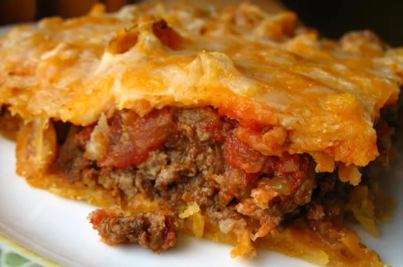

Lasagna

Description
When John Chandler submitted this lasagna recipe to Allrecipes more
than 20 years ago, he had no idea how successful it would become.
One of our top-performing recipes of all time, World's Best Lasagna
racks up more than 7 million views per year and has ranked among the
most popular lasagna recipes on the internet for two decades.
Make our most popular lasagna today to find out what all the fuss is
about!
Ingredients
- Meat - Sweet italian sausage and lean ground beef
- 1 onion and 2 cloves of garlic
- 1 can of crushed tomatoes, two cans of tomato sauce, and two
cans of tomato paste
- 2 tbsp of white sugar
- Spices - Fresh parsley, dried basil leaves, salt, italian
seasoning, fennel seeds and black pepper.
- Lasagna noodles
- Cheeses - Parmesan, mozzarella, and ricotta.
- 1 egg
Steps
- Make the meat sauce.
- Cook the noodles.
- Make the ricotta mixture.
- Layer the lasagna according to the recipe instructions.
- Cover with foil and bake.
- Let the lasagna rest before serving.
How to Layer Lasagna
The general order to follow:
- Meat sauce
- Noodles
- Ricotta mixture
- Mozzarella
- Meat sauce
- Parmesan
- Repeat the layers, then top with the remaining parmesan